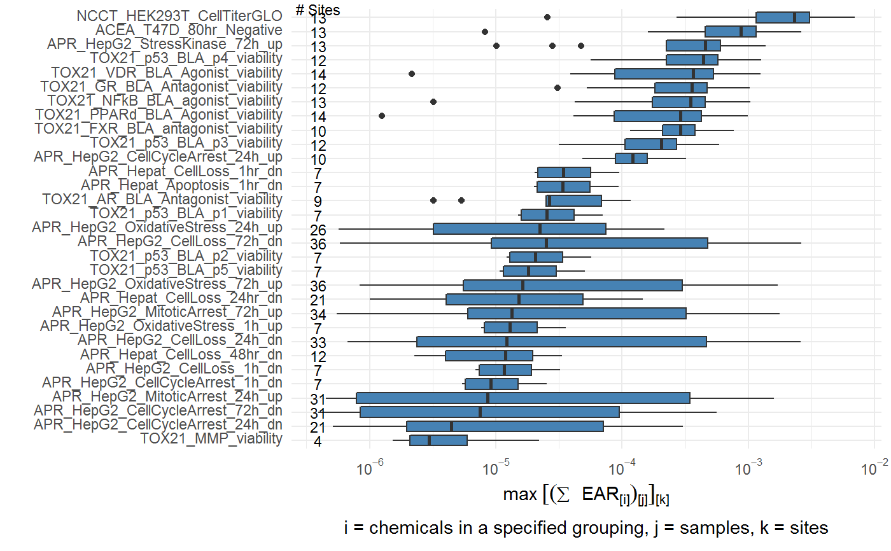
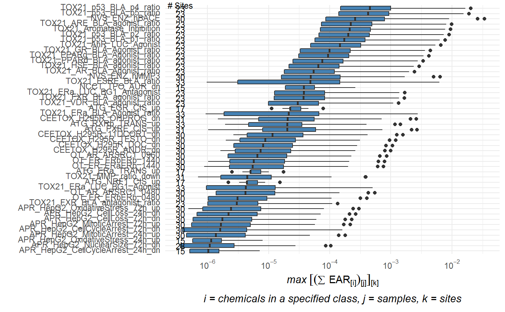
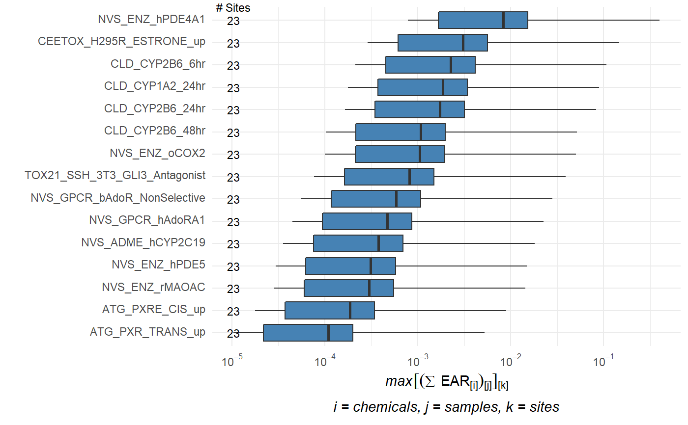

plot_tox_endpoints.RdThe plot_tox_endpoints function creates a set of boxplots representing EAR
values for each endPoint based on the selected data. A subset of data is first
chosen by specifying a group in the filterBy argument. The
filterBy argument must match one of the unique options in the category.
For example, if the category is "Chemical Class", then the filterBy argument
must be one of the defined "Chemical Class" options such as "Herbicide".
A boxplot is generated for each endPoint. The EAR values that are used to
create the boxplots are the mean or maximum (as defined by mean_logic) for each
site as described in "Summarizing the data"in the Introduction vignette:
../doc/Introduction.html#summarize_data.
plot_tox_endpoints(chemicalSummary, category = "Biological", filterBy = "All", manual_remove = NULL, hit_threshold = NA, mean_logic = FALSE, sum_logic = TRUE, font_size = NA, title = NA, palette = NA)
| chemicalSummary | Data frame from |
|---|---|
| category | Either "Biological", "Chemical Class", or "Chemical". |
| filterBy | Character. Either "All" or one of the filtered categories. |
| manual_remove | Vector of categories to remove. |
| hit_threshold | Numeric threshold defining a "hit". |
| mean_logic | Logical. |
| sum_logic | logical. |
| font_size | Numeric to adjust the axis font size. |
| title | Character title for plot. |
| palette | Vector of color palette for fill. Can be a named vector to specify specific color for specific categories. |
# This is the example workflow: path_to_tox <- system.file("extdata", package="toxEval") file_name <- "OWC_data_fromSup.xlsx" full_path <- file.path(path_to_tox, file_name) tox_list <- create_toxEval(full_path) ACClong <- get_ACC(tox_list$chem_info$CAS) ACClong <- remove_flags(ACClong) cleaned_ep <- clean_endPoint_info(endPointInfo) filtered_ep <- filter_groups(cleaned_ep) chemicalSummary <- get_chemical_summary(tox_list, ACClong, filtered_ep) plot_tox_endpoints(chemicalSummary, filterBy = "Cell Cycle")#> Warning: Transformation introduced infinite values in continuous y-axis#> Warning: Removed 1281 rows containing non-finite values (stat_boxplot).#> Warning: Transformation introduced infinite values in continuous y-axis#> Warning: Removed 1281 rows containing non-finite values (stat_boxplot).plot_tox_endpoints(chemicalSummary, category = "Chemical Class", filterBy = "PAHs")#> Warning: Transformation introduced infinite values in continuous y-axis#> Warning: Removed 1452 rows containing non-finite values (stat_boxplot).#> Warning: Transformation introduced infinite values in continuous y-axis#> Warning: Removed 1452 rows containing non-finite values (stat_boxplot).plot_tox_endpoints(chemicalSummary, category = "Chemical", filterBy = "Atrazine")#> Warning: Transformation introduced infinite values in continuous y-axis#> Warning: Removed 340 rows containing non-finite values (stat_boxplot).#> Warning: Transformation introduced infinite values in continuous y-axis#> Warning: Removed 340 rows containing non-finite values (stat_boxplot).